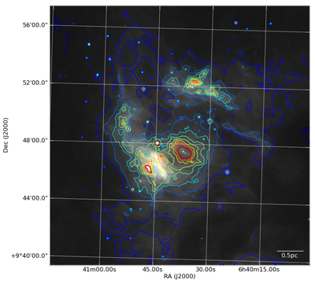

APLpy (the Astronomical Plotting Library in Python) is a Python module aimed at producing publication-quality plots of astronomical imaging data in FITS format. It effectively provides a layer on top of Matplotlib to enable plotting of Astronomical images, and allows users to:
The APLpy Documentation contains all the information needed to run APLpy successfully. The most important page is the Quick Reference Guide which provides concise instructions for all of the APLpy functions.
Start off by downloading this tar file, expand it, and go to the APLpy-example directory on the command line. Then, launch IPython:
$ ipython --matplotlib
If you have trouble downloading the file, then within your IPython session enter:
from astropy.extern.six.moves.urllib import request
import tarfile
url = 'http://python4astronomers.github.com/_downloads/APLpy-example.tar'
tarfile.open(fileobj=request.urlopen(url), mode='r|').extractall()
cd APLpy-example
ls
Import the aplpy module (note the lowercase module name):
import aplpy
And create a new figure to plot the FITS file with:
f = aplpy.FITSFigure('ngc2264_cutout.fits')
This should open up a matplotlib window and will show an empty set of axes with coordinates. From now on, you will interact with the figure by calling methods associated with f. For example, show the image as a grayscale:
f.show_grayscale()
The automatic settings for the stretch should be decent, but there are of course options to allow custom min/max levels. You can now try panning around and zooming in like you would do in Matplotlib, and you will notice the coordinates updating. Press the Home button to reset the view.
Next, let’s overlay a set of contours from a different image:
f.show_contour('ngc2264_cutout_mips.fits', levels=10)
We can also add a coordinate grid:
f.add_grid()
And finally let’s add a scalebar to make the plot look sciency:
f.add_scalebar(0.03, '0.5pc', color='white')
We can now save our masterpiece either by clicking on the Save icon in the matplotlib window, or doing:
f.save('my_first_plot.eps')
The latter is recommended because it will automatically figure out the best resolution with which to output your plot. Your plot should look something like this:
Exercise 1
Use the help or ? functionality in ipython to figure out how to set the min/max levels on the grayscale manually, and to change the stretch function to a square-root stretch. Also use the Use the Quick Reference Guide to figure out how to change the grayscale to a colorscale.
Click to Show/Hide Solution
To manually set the levels:
f.show_grayscale(vmin=0., vmax=200.)
To additionally use a square-root stretch:
f.show_grayscale(vmin=0.,vmax=200., stretch='sqrt')
To change to a colorscale:
f.show_colorscale()
Note that the colormap can be set using for example:
f.show_colorscale(cmap='gist_heat')
where the value of the cmap argument can be any of the names listed on this page.
Exercise 2
Use the Quick Reference Guide to manually set the tick spacing on both axes. In the default view for the example FITS file above, the arcseconds in the declination are not useful (they are always zero). Try and change the format of the y-axis labels so that they only include degrees and arcminutes.
Click to Show/Hide Solution
To set the tick spacing:
f.ticks.set_xspacing(0.05)
f.ticks.set_yspacing(0.05)
To show the y-axis labels in dd:mm format:
f.tick_labels.set_yformat('dd:mm')
Exercise 3
Use APLpy to plot one of your own FITS images! If you don’t have any FITS files at hand, you can play with this newly-released WISE data of M82!
If you have trouble downloading the file, then within your IPython session enter:
from astropy.extern.six.moves.urllib import request
import tarfile
url = 'http://python4astronomers.github.com/_downloads/m82_wise.tar'
tarfile.open(fileobj=request.urlopen(url), mode='r|').extractall()
cd m82_wise
ls